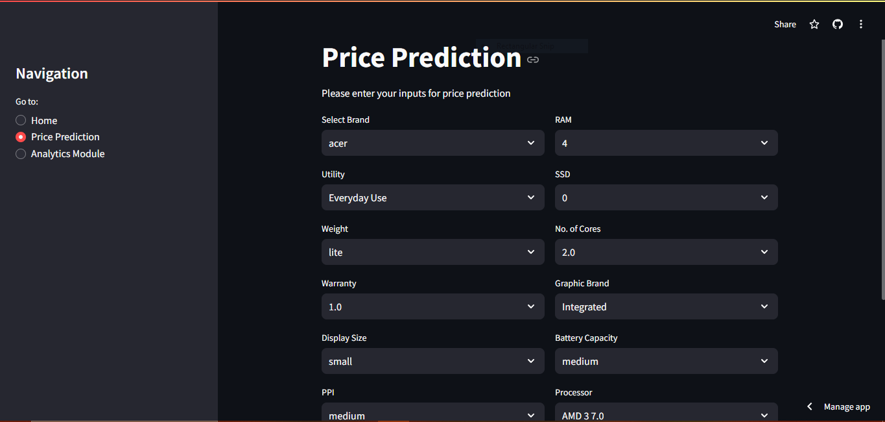
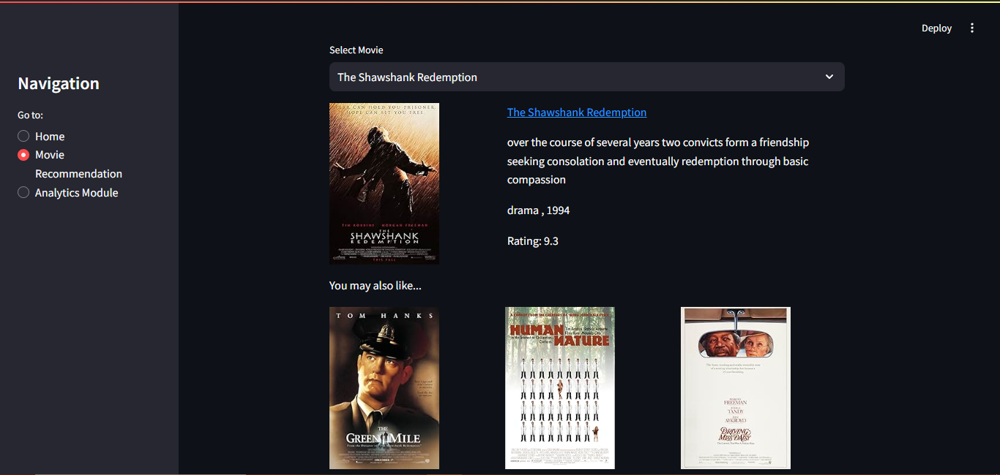

Projects

Extractive Question Answering
- Project Overview: Developed an extractive question-answering model capable of identifying the exact span of text that answers a given question from a passage.
- Model Architecture: Fine-tuned TFAutoModelForQuestionAnswering from the Hugging Face Transformers library.
- Training Data: Used the SQuAD (Stanford Question Answering Dataset), a well-known benchmark dataset for training and evaluating question-answering models.
- Platform: Deployed the fine-tuned model on Hugging Face Spaces, allowing users to interact with the model through a user-friendly interface.
- Results: Achieved accurate and efficient extraction of answers from passages, with the model demonstrating strong performance on various types of questions.



Laptop Price Prediction Project
- End-to-End Process: Developed a modular machine learning pipeline for laptop price prediction, including data gathering, cleaning, EDA, feature engineering, and model building.
- Streamlit App: Created an interactive Streamlit app for real-time laptop price predictions, allowing users to input specifications and visualize results.
- Deployment: Deployed the app on Streamlit Cloud, making it accessible via a web link for broader use.
- Analytics Integration: Added an analytics module to track user interactions and gather insights for app improvement.
- Technologies Used: Python, Pandas, Scikit-learn, Streamlit, and Streamlit Cloud for deployment and analytics.



Movie Recommendation Project
- Project Overview: Developed an end-to-end movie recommendation system that suggests movies based on various parameters like actors , directors, plot of the movie etc. using cosine similarity between them.
- Modular Coding: Implemented the project using a modular coding approach, ensuring clean, maintainable, and reusable code.
- Application: Built the recommendation system using Streamlit, providing an interactive interface for users to explore movie recommendations.
- End-to-End Workflow: Handled all stages of the machine learning pipeline, from data preprocessing and feature extraction to model development.


Global Food Trade Analysis: A Deep Dive into Import-Export Dynamics
- Data Overview: Analyzed global food trade data spanning from 1986 to 2022, covering a wide range of food items and agricultural products.
- Insights: Uncovered key trends in global food trade, such as dominant regions, shifts in trade volumes, and the impact of specific products on global trade dynamics.
- Data Cleaning: Managed missing values, standardized categories, and handled large datasets to optimize analysis.
- Geo Maps: Visualized trade volumes with bubble sizes representing the amount of food traded, differentiated by region and element (import/export).
- Time Series Analysis: Examined year-wise trends in food imports and exports across different regions.